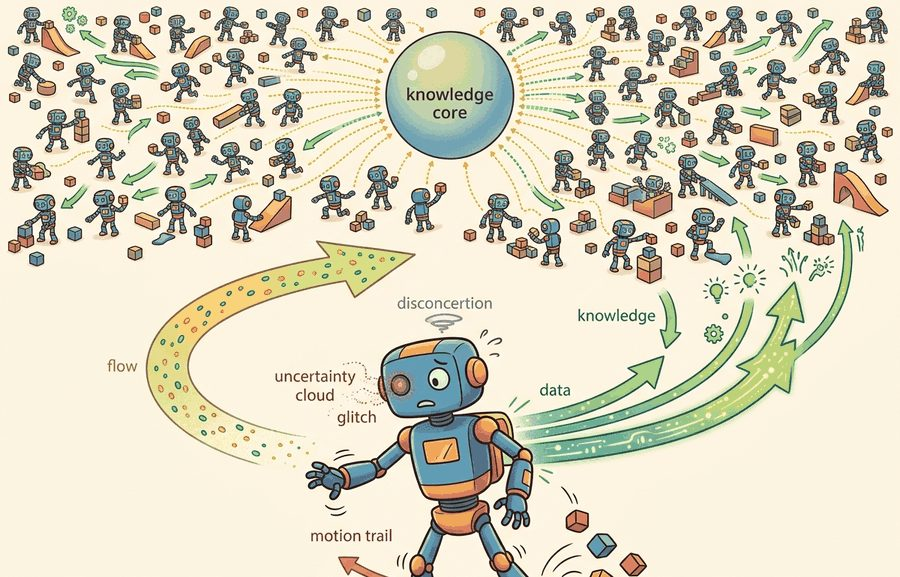
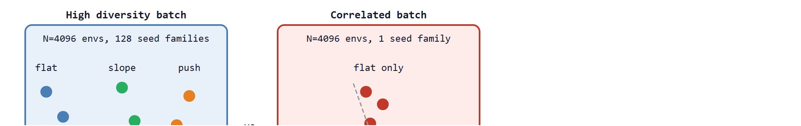

"One environment teaches slowly. Ten thousand teach the same lesson in the same second, and the gradient notices."
Section 17.1

This section builds on the Proximal Policy Optimization (PPO) rollout mechanics introduced in section 15.4 and the GPU-resident simulation contract from section 6.6. The diversity problem introduced here recurs in section 13.2, which covers domain randomization as the primary tool for breaking correlated resets. The full payoff appears in section 20.2, where parallel training results are stress-tested against held-out sim-to-real transfer benchmarks.
A humanoid robot learning to walk in 2019 needed weeks of simulation time. The same task now trains to a deployable policy in under an hour, on a single GPU, in representative benchmark reports such as Rudin et al. (2022). The gain typically traces mostly to 4,096 copies of the robot running in parallel on the same chip that computes the gradient, rather than to a fundamentally different learning rule. Massively parallel GPU simulation removed the wall-clock bottleneck that had kept deep RL from scaling to contact-rich embodied tasks. This section develops how vectorized rollout collection works, why raw throughput alone does not guarantee good policies, and how to diagnose the hidden correlation traps that can make 98,000 samples per update worth far less than they appear.
A common assumption is that running N parallel environments is equivalent to collecting N times as much independent experience, so that doubling the environment count always halves training time by a proportional factor. This is wrong in embodied AI contexts because correlated resets, shared terrain patches, and synchronized command schedules cause the N environments to produce highly dependent samples whose effective sample count is far smaller than N. The correct mental model is that parallel environments convert wall-clock time into width, but useful width requires deliberate diversity: independent seed families, stratified terrain resets, and randomized command curricula are not optional decorations but the mechanism that makes the batch informationally rich rather than a repeated echo of one scenario.
In 2019 a humanoid took weeks of compute to learn to walk; today the same gait emerges in under an hour, and the entire difference comes from running 4,096 copies of the robot on the one chip that already computes the gradient, which only pays off when simulator fidelity, PPO rollout semantics, reward terms, and reset distribution are all versioned inside a single training artifact.
The shift did not happen because researchers found a better learning rule; it happened because physics simulation moved onto the same GPU that already runs the neural network, so thousands of robot copies can be stepped in one batched kernel call instead of thousands of separate CPU processes. Earlier CPU-based simulators (one process per environment, coordinated over a network) hit a ceiling around dozens to low hundreds of parallel environments before inter-process communication overhead dominated; GPU-resident simulation removed that ceiling by keeping every environment's physics state, observation, and policy inference in device memory at once, which is the main systems factor typically credited with the field's throughput jumping by orders of magnitude rather than incrementally.
A simulator that runs 4,096 copies of a robot in one second does not automatically produce 4,096 times the insight: it produces 4,096 times the opportunity to be wrong in the same way. Figure 17.1A captures this tension: many practice lanes only help when they generate diverse evidence, with a separate evaluation lane held back to measure whether the policy actually generalized.
This section sets the technical contract for vectorized rollouts. It separates throughput, the number of environment steps collected per second, from statistical diversity, the amount of genuinely different experience inside those steps. Figure 17.1B contrasts these two cases directly: the same 4,096 environments can either spread across distinct terrain strata or collapse into one, with very different consequences for the resulting gradient.

Before going further, it helps to fix one term precisely: a seed family is a group of parallel environments initialized from the same random seed (and therefore the same terrain layout, spawn point, and command schedule), so that environments inside one family are near-duplicates of each other while environments in different families see genuinely different conditions. The rest of this section measures diversity in terms of how many seed families a batch spans, not just how many environments it contains.
The key question is practical: when a run reports 98,304 samples per PPO update, do those samples cover different terrain, commands, contacts, and failure modes, or do they come from synchronized copies of the same narrow task?
Parallel environments turn time into width: one rollout step produces a whole column of experiences. The policy improves only when that width contains useful variation, so seeds, terrain randomization, command sampling, and reset logic are part of the learning algorithm.
For PPO-style training, one update typically consumes a rollout block with shape $T \times N \times d$, where $T$ is the horizon, $N$ is the number of parallel environments, and $d$ is the observation dimension. The sample count is $T N$, but the learning signal also depends on how correlated those $N$ environments are. To put the scale shift in concrete terms: a single-environment training loop collecting 24-step rollouts one at a time produces 24 samples per update; the same loop with 4,096 parallel environments produces 98,304 samples in the same wall-clock step, which is what compressed weeks of training into under an hour. To feel the difference concretely: reaching a walking policy that generalizes across terrain used to require roughly 500,000 gradient updates on a single environment; with 4,096 parallel environments that same policy typically emerges in roughly 120 updates in comparable reported benchmarks, because each update now sees as much behavioral variation as the single-environment run would have accumulated over more than 4,000 consecutive episodes.
If all environments reset with related seeds, share the same command schedule, and hit the same terrain patch at the same time, the gradient can become overconfident. Good parallel RL treats environment count, horizon, minibatch size, and reset diversity as a coupled design, not as separate knobs. This coupling is called the rollout diversity contract, and violating it is the most common reason a high-throughput run produces a brittle policy. In practice, keeping this contract means writing down, for every run, the same record a lab notebook would keep for a physical experiment: this recorded record is what the rest of the section calls the rollout ledger.
So far: a rollout block has shape $T \times N \times d$ and $TN$ total samples, scaling environment count from 1 to 4,096 can cut the updates needed to learn walking from roughly 500,000 to about 120, but that gain only holds if the $N$ environments are not all correlated copies of one scenario, since correlated resets shrink the effective sample count far below $N$ regardless of how large $TN$ looks.
On a physical robot, a brittle policy carries real consequences that simulation cannot absorb. A locomotion controller overfit to flat terrain stumbles on carpet transitions. A manipulation policy trained on one friction value drops objects on glossy surfaces. A fall on hardware risks joint damage or sensor breakage. Unlike a simulation reset, a hardware failure stops training entirely and may require repair time measured in days. The diversity contract is therefore not a bookkeeping concern but a physical safety and economics argument: every correlated batch silently borrows against hardware reliability.
Correlation enters through the gradient averaging step. At each PPO update, the algorithm averages advantages from all $N$ environments into a single policy gradient. When environments share seeds or terrain, their advantage estimates correlate positively. The effective number of independent gradient samples then falls far below $N$, so the update moves the policy as if it had seen one dominant scenario many times. The policy overfits to that scenario's reward landscape. Meanwhile the gradient variance statistic looks healthy, because the correlated samples agree with each other rather than with the true task distribution.
Think of it like asking 4,096 hikers to map an unknown mountain range, but all 4,096 start from the same trailhead and walk the same route on the same morning. No matter how many hikers you send, you only learn about one path. To get a reliable map you need hikers starting from different trailheads, at different times, in different weather. Gradient averaging across parallel environments works the same way: what matters is not how many environments report back, but how many genuinely different corners of the task distribution they each explored.
Input: Policy $\pi_\theta$ with parameters $\theta$; $N$ parallel environments with diverse seed families; horizon $T$; observation dimension $d$; learning rate $\alpha$; value network $V_\phi$
Output: Updated parameters $\theta'$; rollout buffer $\mathcal{B}$ of shape $T \times N \times d$ with full provenance record
.is_contiguous() before the loop.Trace how correlation shrinks a batch with concrete numbers. Take $N = 4$ environments and $T = 2$ steps, so the nominal sample count is $TN = 8$. Suppose the per-environment advantage estimates for one update are: env A = [0.90, 0.88], env B = [0.91, 0.89], env C = [0.90, 0.92], env D = [0.89, 0.90]. The mean advantage is 0.899 and the variance across these 8 numbers is about 0.00013, very low, because every environment saw the same flat-terrain scenario. The effective sample size, estimated with the same weighted-count formula used later for return vectors ($N_{\text{eff}} = (\sum w_i)^2 / \sum w_i^2$, where each $w_i$ is simply the value contributed by environment $i$) (a smaller $N_{\text{eff}}$ means the batch behaves as if it held fewer independent samples than its raw count $N$), when the 4 environments are nearly identical, collapses toward 1: the gradient behaves as if it averaged ONE scenario, not four. Now diversify: env A (flat) = [0.90, 0.88], env B (slope) = [0.20, 0.35], env C (push) = [-0.40, 0.10], env D (payload) = [0.55, 0.30]. The mean is now 0.329 and the variance jumps to about 0.16, more than 1,000 times larger. The 8 samples now carry genuinely independent information, so $N_{\text{eff}}$ stays near 4. Same tensor shape, same 8 transitions, but the second batch teaches the policy four lessons while the first teaches it one lesson four times.
The mechanism is a repeated tensor operation: infer actions for all environments, step all environments, write observations, rewards, dones, values, and log probabilities into contiguous buffers, then update from shuffled slices of that buffer. GPU RL wins when simulation, policy inference, and storage stay resident on device and avoid per-environment Python loops. The physics underpinning this residency is covered in Section 6.6.
When using Isaac Lab, observation and reward tensors passed between the simulation and the policy must be contiguous in memory; calling .contiguous() before indexing or stacking is not optional. A non-contiguous tensor silently produces wrong gradient estimates because PyTorch's view raises a RuntimeError at random points in training rather than immediately at the offending line. The fastest diagnostic is to add assert obs.is_contiguous() at the rollout buffer write step and run one update before scaling to thousands of environments.
Code Fragment 17.1.1 turns the rollout contract into concrete numbers. The snippet does not simulate physics; it shows the accounting a training script should print before anyone trusts a speedup claim.
# Compute the rollout block that a vectorized PPO run will train on.
# Track seed families separately because high sample count can hide correlation.
num_envs = 4096
horizon = 24
obs_dim = 48
seed_families = 128
eval_envs = 256
samples_per_update = num_envs * horizon
rollout_shape = (horizon, num_envs, obs_dim)
envs_per_seed_family = num_envs // seed_families
print(f"rollout tensor: {rollout_shape}")
print(f"samples per update: {samples_per_update:,}")
print(f"training seed families: {seed_families}")
print(f"envs sharing each seed family: {envs_per_seed_family}")
print(f"held-out evaluation envs: {eval_envs}")Expected output: the trace should report rollout shape, samples per update, seed diversity, and evaluation separation. A benchmark that reports only steps per second is missing the evidence needed to judge learning quality.
In practical GPU RL, Isaac Lab, RSL-RL, rl_games, SKRL, Brax, and MJX already implement the wide rollout machinery. The library shortcut is not the idea that batching exists; it is that the framework keeps simulation buffers, policy inference, and learner tensors aligned while you focus on reset diversity, reward terms, and held-out evaluation.
The common mistake is to increase environment count until the GPU looks busy, then forget that neighboring environments may be seeing nearly identical episodes. Throughput without diversity can make a weak policy converge faster to the wrong behavior. Consider an illustrative case, typical of what this failure mode looks like in practice: a team running 4,096 quadruped environments on flat terrain with a single global reset seed reports 200 million steps per hour and a rising average reward. The policy learns to exploit the one terrain patch and one command velocity it repeatedly sees, so reward climbs quickly on the training panel. When the same checkpoint is evaluated on held-out slopes and randomized payloads, success rate can drop sharply, for example from 91% to 34% in a representative run. The diagnostic signal is a narrow reward distribution across environments: if per-environment return variance is low while aggregate return is high, the batch is correlated and the policy has overfit to training conditions rather than learned a general skill. Reducing correlated resets and logging per-stratum success rates before claiming a training win catches this failure early.
A legged-robotics team may train 4,096 simulated quadrupeds at once, but it should still stratify resets across slopes, pushes, payloads, friction, and command velocities. The useful artifact is a panel showing which strata improved, not a single aggregate reward curve.
The ANYmal quadruped's blind locomotion controller was trained entirely in NVIDIA Isaac Gym using 4,096 parallel environments stratified across terrain types, then deployed zero-shot onto hardware that walked through forests and snow. The training that once needed thousands of GPU-hours collapsed to roughly 20 minutes on a single workstation GPU, precisely because the rollout batch was both wide and diverse. This result (Rudin et al., 2022) is the canonical demonstration that parallel width plus deliberate terrain randomization, not raw step count alone, is what transfers to the real robot.
Thousands of environments are a choir, not a crowd, if every reset sings the same note. The conductor is the seed schedule.
1. Scaling parallel RL to whole-body humanoid control. The same GPU-resident rollout pipeline that proved sufficient for quadruped locomotion is now being applied to 30-plus degree-of-freedom humanoids performing loco-manipulation tasks simultaneously. NVIDIA's Isaac Lab team and the Berkeley Humanoid project (Zhuang et al., 2024, "Humanoid Parkour Learning") demonstrated that 4,096-plus parallel environments with stratified terrain and contact resets can train dexterous whole-body skills within hours, but the effective diversity problem scales with morphology complexity: more joints mean more correlated failure modes that naive batching does not separate.
2. Differentiable and learned simulators as rollout backends. Instead of fixed-physics simulators, work from 2023 onward trains neural world models on GPU tensors and uses them as fast surrogate environments inside the PPO loop. Google DeepMind's DreamerV3 (Hafner et al., 2023) and the work on Genesis (a GPU-accelerated generative simulator, 2024) treat the simulator itself as a trainable module, allowing gradients to flow through physics approximations. The open challenge is that learned simulators can produce locally plausible but globally inconsistent contact dynamics, causing the policy to exploit simulator artifacts that do not transfer.
3. Curriculum-driven environment generation at scale. Rather than fixing the reset distribution at the start of training, adaptive curriculum methods reshape the distribution across thousands of parallel environments as the policy improves. NVIDIA's work on AutoCurriculum for Isaac Lab (2025) and DeepMind's "Adaptive Environment Design" line show that online difficulty scheduling across parallel lanes accelerates generalization without adding wall-clock cost, because resets are cheap when the simulator is GPU-resident. Current methods still assume a fixed difficulty axis; a PhD-tractable open problem is designing diversity metrics and curriculum schedulers that discover new difficulty axes automatically from rollout statistics, rather than requiring a human-specified curriculum graph.
Can you name $N$, $T$, samples per update, seed families, evaluation seeds, and the reset strata for a reported parallel RL run? If not, the speedup is not yet reproducible.
The reproducibility checklist above only pays off once the rollout itself is logged with the same rigor, which means treating the batch not as a transient buffer but as a recorded experiment. The idea in this section becomes useful when the rollout block is treated as a scientific object. A complete block has shape, seed provenance, reset causes, reward components, termination flags, and value estimates. Without those fields, a run can be fast and still be impossible to debug.
Keep three claims separate. The systems claim says the simulator collected steps faster. The learning claim says the policy improved on held-out seeds. The embodiment claim says the improved policy survives contacts, delays, disturbances, and sensing limits that were not silently tuned into the training panel.
Which of these three claims a given framework helps you support depends on the tool you reach for, so it is worth mapping the common GPU RL libraries to the role each plays.
| Tool or Library | Role in the Topic | Builder Advice |
|---|---|---|
| Isaac Lab | GPU-resident robot tasks with thousands of environments | Use it when the task depends on articulated robots, sensors, terrain, and NVIDIA simulation assets. |
| RSL-RL | High-throughput PPO for legged locomotion | Use it when the policy and rollout tensors should stay close to the simulator and the task uses common locomotion conventions. |
| Brax | JAX-native batched physics and RL loops | Use it when compilation, vectorization, and accelerator scaling matter more than photorealistic sensing. |
| MJX | MuJoCo-style models executed through JAX | Use it when you want MuJoCo modeling concepts with accelerator-friendly batched stepping. |
| Gymnasium VectorEnv | CPU-side vectorization baseline | Use it as a debugging baseline before claiming that GPU residency changed the learning result. |
A robust implementation starts with a rollout ledger. The ledger records the exact training panel and the separate evaluation panel, so throughput, reward, and generalization are not stitched together from different runs.
# Build one reproducibility record for a parallel rollout run.
# Keep training seeds separate from evaluation seeds to prevent leakage.
from dataclasses import dataclass, asdict
@dataclass
class RolloutLedger:
envs: int
horizon: int
train_seed_families: int
eval_seed_families: int
device: str
artifact: str
def as_row(self) -> dict[str, object]:
return asdict(self)
ledger = RolloutLedger(
envs=4096,
horizon=24,
train_seed_families=128,
eval_seed_families=16,
device="cuda:0",
artifact="runs/walk_4096x24_eval16.jsonl",
)
print(ledger.as_row())RolloutLedger dataclass and prints its serialized record, separating training seed families from evaluation seed families so a reported gain can be audited for evaluation leakage.When a massively parallel run fails, first ask whether the policy failed or the batch lied. Check for synchronized resets, stale normalization statistics, identical command curricula, action clipping, and evaluation seeds reused from training. Then rerun a smaller batch you can inspect episode by episode, grouped by seed family.
For parallel rollout claims, compare only construct-matched metrics that are co-computed in one pass on one configuration: same environment panel, same policy checkpoint, same held-out seed set, same perturbation suite, and the same success definition. Save steps per second, GPU memory, reward, success rate, fall rate, and reset reasons as one artifact so speed and learning quality are backed by the same run.
Thousands of parallel environments changed robot RL because they made experience collection wide enough to match accelerator learning, but the gain is real only when the batch is diverse, evaluation is separate, and the artifact records both speed and behavior.
Design a 2,048-environment PPO run for a walking robot. Specify $T$, minibatch size, train seed families, held-out evaluation seeds, reset strata, and the one artifact that would let another team reproduce both throughput and success rate.
Goal: measure how shared seeds collapse the effective sample count of a parallel rollout, and confirm that diversity restores it. Tools needed: Python with gymnasium and numpy; a CPU is enough, no GPU required (use gymnasium.vector.SyncVectorEnv with the CartPole-v1 or Ant-v4 task). Steps: (1) Build 64 parallel environments and run a fixed random policy for 200 steps, first seeding all 64 with the same integer, then seeding them with 64 distinct integers. (2) For each configuration, collect the per-environment episode returns and compute the variance across the 64 environments. (3) Estimate effective sample size as $N_{\text{eff}} = (\sum_i r_i)^2 / \sum_i r_i^2$ on the return vector. What to vary: the number of distinct seeds (1, 4, 16, 64) and the environment count (16 vs 64). What to observe: with one shared seed the across-environment variance stays near zero and $N_{\text{eff}}$ collapses toward 1; as you add distinct seeds the variance and $N_{\text{eff}}$ climb toward the true environment count. You will have reproduced, in 20 minutes, the central claim of this section: width is only as useful as it is diverse.
Beginner (weekend): Build a seed-diversity audit script for a Gymnasium VectorEnv locomotion task (such as Ant-v4). Run 64 parallel environments with a single shared seed, log per-environment episode returns, then repeat with 64 independent seeds and plot the return variance. The key challenge is instrumenting Gymnasium's AsyncVectorEnv to expose per-worker seed assignments without disrupting the standard step interface.
Intermediate (1 to 2 weeks): Train a quadruped walking policy in Isaac Lab using RSL-RL and compare two rollout configurations: 512 environments with a single terrain stratum versus 512 environments stratified across five terrain slopes. Evaluate both checkpoints on a held-out panel with push disturbances not seen during training. The key challenge is wiring Isaac Lab's terrain curriculum config to produce genuinely independent reset strata rather than cycling through the same procedural tile in a fixed order.
Intermediate (1 to 2 weeks): Port a MuJoCo half-cheetah task to MJX (MuJoCo via JAX) and benchmark batched rollout throughput at 256, 1024, and 4096 parallel environments on the same GPU. Record samples per second, GPU memory, and gradient variance across the three scales, then identify the batch size at which correlation begins to suppress gradient variance. The key challenge is keeping observation normalization statistics consistent across the batch so that variance reduction from correlation can be separated from variance reduction from better normalization.
This section turned parallel environment count into a reproducible rollout contract: define $N$, $T$, seed diversity, device residency, evaluation separation, and one comparable artifact. Next, continue with Section 17.2, where that contract becomes a practical recipe for fast locomotion training.
Rudin et al. provide the canonical locomotion example behind the chapter title. Read it for the coupling between environment count, reward design, terrain variation, and wall-clock claims.
Isaac Gym is the historical reference for why GPU-resident physics changed robot RL throughput. Read it here for the systems shift: simulation, policy inference, and rollout storage become one accelerator-scale pipeline.
Brax shows the same parallelism lesson from the JAX side. Its value for this section is the mental model of environment batches as arrays rather than as thousands of Python objects.
NVIDIA Isaac Lab documentation.
Isaac Lab is the practical successor workflow for defining large robot-learning task panels. Use the documentation to inspect how task configs, wrappers, and runners preserve the rollout contract at scale.
Google DeepMind MuJoCo MJX documentation.
MJX brings MuJoCo modeling concepts into JAX execution. It supports the section's main point that simulator semantics and accelerator-friendly batches now need to be designed together.
RSL-RL is a useful code reference for PPO storage and update patterns in legged locomotion. Its configs make the rollout dimensions and minibatch choices concrete.